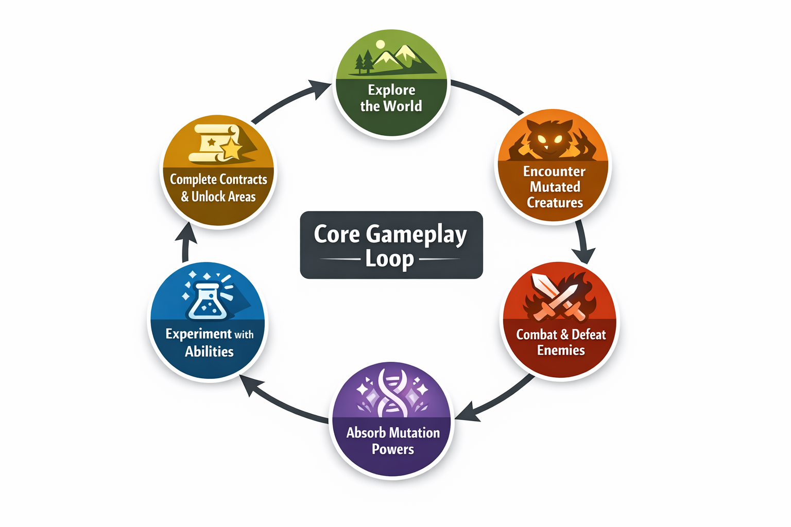
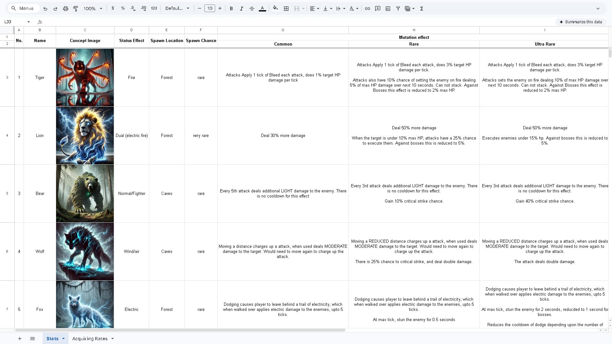

Narrative Driven Action RPG
A world where accelerated evolution reshaped nature and civilization was absorbed into the landscape. Players explore a mutation-driven ecosystem while uncovering relics of the old world.
Project Anano is a narrative-driven exploration RPG set in a mutated ecosystem where nature has adapted and grown beyond human scale. The world is not alien — it is Earth pushed to extremes.
Civilization was not destroyed by nature; it was absorbed by it. Buildings, roads, and infrastructure now exist intertwined with massive forests and evolving wildlife.
Players take on the role of Jun, a wanderer exploring this transformed world while uncovering relics of the old civilization.
The defining idea behind the world of Anano is that nature did not destroy civilization — it grew around it.
Trees grow through buildings, vines wrap around skyscrapers, and roots break apart highways while still preserving traces of the past.
The environment constantly reveals fragments of the old world hidden within the new ecosystem.
The world is composed of several large exploration regions. Each biome emphasizes different ecological mutations and environmental storytelling.
The gameplay loop focuses on exploration, mutation discovery, and relic retrieval missions that expand world lore.

Creatures in the world possess unique mutations that players can absorb after defeating them.
These mutations grant new abilities that expand traversal, combat, and exploration options.

Relics are artifacts from the old world requested by characters within the dome settlements.
These items are not magical objects — they are ordinary items from the past such as books, cassette players, posters, or technology.
Relic hunting reinforces the central theme: the world moved on, but fragments of the past remain.
The goal of Project Anano is to create a world that feels both familiar and transformed.
Rather than presenting a destroyed civilization, the game explores a world where nature adapted and evolved beyond human scale.